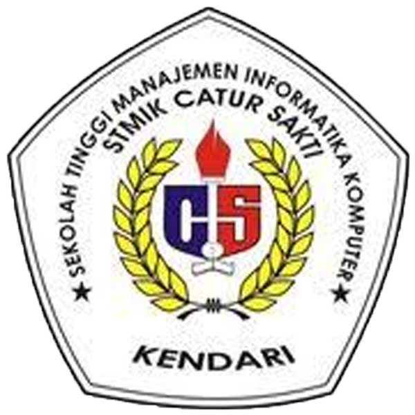

STMIK CATUR SAKTI KENDARI
The Spirit Of Education
beranda
Sistem informasi
Sistem Komputer
Komputer Akuntansi
Contact US
Welcome STMIK Catur Sakti
Visi Misi Tujuan dan Sarana(VMTS)STMIK CATUR SAKTI Kendari disusun dengan sangat jelas,realistik,dan memiliki keterkaitan satu sama lain dengan melibatkan seluruh stakeholder.VMTS Sekolah Tinggi telah disosialisasikan secara masif sebagai acuan penyusunan renstra program studi dan satuan kerja lainnya. Tata pamong, kepemimpinan, dan sistem pengelolaan di STMIK Catur Sakti telah berjalan secara kredibel,transparan,akuntabel,bertanggung jawab dan menerapkan aspek-aspek keadilan.Tata pamong dan lembaga-lembaga yang diperlukan sudah dibentukdan bekerja dengan efisien dan efektif karena dilengkapi dengan tugas pokok dan fungsi masing-masing.Komitmen terhadap Sistem Penjaminan Mutu sebagai lembaga Internal(SPMI)dan sistem Penjaminan Mutu Eksternal(SMPE)dinyatakan dengan membentuk Badan Penjaminan Mutu sebagai lembaga yang mandiri yang secara rutin melaksanakan berbagai audit internal dan monitoring bidang akademik dan bidang non akademik.
Tata pamong dan lembaga-lembaga yang diperlukan sudah dibentukdan bekerja dengan efisien dan efektif karena dilengkapi dengan tugas pokok dan fungsi masing-masing.Komitmen terhadap sistem Sitem Penjaminan Mutu Internal(SPMI)dan sistem Penjaminan Mutu Eksternal(SMPE) dinyatakan dengan membentuk Badan Penjaminan Mutu sebagai lembaga yang mandiri yang secara rutin melaksanakan berbagai audit internal dan monitoring bidang akademik dan bidang non akademik.
Visi,misi,tujuan dan sasaran Program Studi Sistem Komputer dirumuskan dengan mengacu pada visi,misi,tujuan dan sasaran STMIK Catur Sakti Kendari.Penyusunan Visi,Misi,Tujuan dan Sasaran Program Studi disusun pada awal pengajuan izin pembukaan program studi ke Direktorat Pendidikan Tinggi dan ditinjau/direvisi setiap maksimal 5(Lima) tahun sekali melalui kegiatan lokakarya sesuai dengan kurikulum dan kebutuhan pasar kerja/penyerapan kerja lulusan.Mekanisme penyusunan Visi,Misi,Tujuan dan Sasaran Program Studi.
Sistem Komputer dijelaskan sebagai berikut :
- Pembentukan Panitia Penyusun Rencana Strategis(Renstra)Program Studi Sistem komputer.
- Me-review Renstra yang didalamnya terdapat visi,misi,tujuan dan sasaran Program Studi Sistem komputer yang lama.
- Menyusun draf Renstra dengan merumuskan visi,misi,tujuan dan sasaran Program Studi yang baru berdasarkan hasil kajian terhadap lingkungan internal(kekuatan dan kelemahan)dan lingkungan eksternal(peluang dan ancaman)
- Draft yang telah disusun selanjutnya dibahas melalui lokakarya dengan melibatkan unsur pimpinan,unit jaminan mutu,pimpinan program studi,seluruh dosen pimpinan studi Sistem komputer,lembaga kemahasiswaan,alumni dan stakeholder.
- Penerapan Renstra Program Studi Sistem komputer 2014 2019.
- Sosialisasi visi,misi,tujuan,dan sasaran Program Stusi kw citivas akademika.
Pihak-pihak yang dilibatkan dalam penyusunan visi,misi,tujuan dan sasaran Program Studi Sistem komputer yaitu:
- Pimpinan STMIK Catur Sakti Kendari,
- Unit Jaminan Muutu STMIK Catur Sakti Kendari,
- Ketua program studi Sistem komputer,
- Seluruh dosen program studi Sistem komputer,
- Perwakilan lembaga kemahasiswaan dan alumni.
VISI
Menjadi Program studi Sistem komputer Unggulan Nasional pada tahun 2020 berdaya saing global yang berkarakter dan berkompoten dalam bidang sistem komputer untuk mendukung proses bisnis melalui integrsiTri Dharma Perguruan Tinggi
MISI
- Menyelenggarakan pendidikan dan pengajaran bidang sistem komputer yang terencana dan terintegritas yang terangkum dalam kurikulum yang dinamis dan tenanga pengajar yang kompeten dibidangnya dalam upaya menhgasilkan lulusan yang memiliki kemampuan Analis sistem dan Bisnis dan Pengembang Sistem komputer
- Menyelenggarakan penelitian inovatif dan kompetitif terkait dengan analisis sistem dan bisnis,dan pengembangan sistem komputer.
- Menyelenggarakan pembinaan dan pengembangan bakaat,minat,penalaran dalam bidang Sistem komputer dan mendorong kesejahteraan mahasiswa.
- Menyelenggarakan sistem tata kelola program studi yang transparan dan akuntabel sehingga mampu memberikan pelayanan prima dalam pendidikan.
TUJUAN
Tujuan Program Studi Sistem komputer yaitu :
- Meningkatkan pendidikan berbasis riset bidang sistem komputer dengan memanfaatkan teknologi komputer dan komunikasi untuk menghasilkan lulusan yang berkualitas dan berdaya sering sehingga mudah diserap pasar kerja dan waktu tunggu kerja yang singkat.
- Mengembangkan penelitian unggulan bidang sistem komputer,yang berorientasi pada publikasi jurnal nasional dan jurnal internasional serta menerapkan hasil penelitian dan produk unggulan bagi kesejahteraan institusi,masyarakat,dan kemajuan IPTEKS.
- Menyelenggarakan sistem tata kelola program studi yang transparan,akuntabel dan kredibel sehingga mampu memberikan pelayanan prima akademik bermutu tinggi.
- Mengembangkan potensi mahasiswa dibidang teknologi komputer dan komunikasi untuk membangun atmosfir akaddemik yang baik di tingkat lokal,wilayah,nasional maupun internasional.
Sasaran dan Strategi Pencapaiannya
Dalam menjelaskan Sasaran dan Strategi Pencapaian,kami menggunakan istilah untuk Tujuan program studi,S untuk Sasaran program studi dan SP untuk Strategi Pencapaian.
Sasaran(S)dan Strategi Pencapaian(SP)Program Studi Sistem komputer:
- Meningkatkan Peningkatan pendidikan berbasis riset bidang sistem komputer dengan memanfaatkan teknologi komputer dan komunikasi dan komunikasi untuk menghasilkan lulusan yang berkualitas dan berdaya saing sehingga mudah diserap pasar kerja dan waktu tunggu kerja yang singkat.
- Meningkatnya kualitas pelaksanaan pendidikan dengan memanfaatkan hasil penelitian dan perkembangan teknologi komputer dan komunikasi.
- Meningkatkan ketersediaan sarana dan prasarana yang menunjang kegiatan tri dharma perguruan tinggi.
- Meningkatkan kualitas tenaga pendidik Master dan Doktor
- Meningkatkan Kompetensi tenaga pendidikan.
- Menyediakan perangkat pembelajaran(Silabus, SAP, Buku Ajar dan Bahan Ajar)
- Menyediakan perpustakaan berupa buku dan majalah sistem komputer,informatika.
- Meningkatkan kualitas jaringan internet dan internet dengan menggunakan fiber optic.